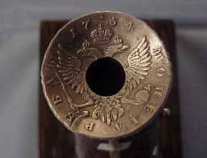
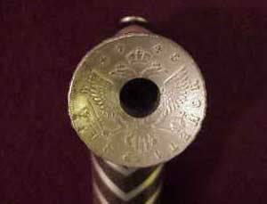
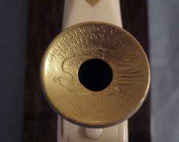
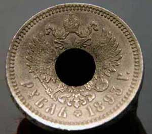
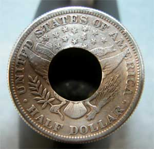
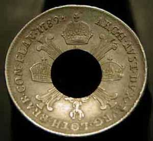
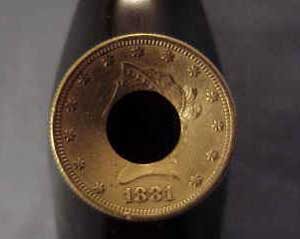
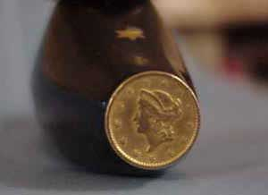
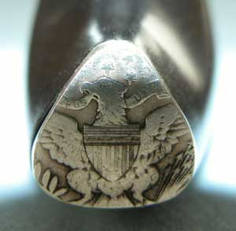
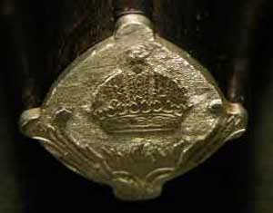

AlaskaStories.com
Smoke photos
More detail pictures of the pipes on the Smoking page.

Rouble Pipe. 1754 Russian Rouble.
Almost identical to the Salmon Pipe bowl rim coin.

Salmon Pipe. 1745 Russian Rouble.
Between the1745 Salmon Pipe rouble rim coin, and the 1754 Rouble Pipe rim coin, Czarina Elizabeth did not age a bit. She looked as substantial and independent minded as ever, as is the prerogative of a Czarina. But the two headed eagle looks better, so the Czarina is on the bottom side, closer to the heat.

Ivory Pipe. 1907 St. Gauden's US $20 Double Eagle.
The Double Eagle is among the eloquent coin designs in the bleak design history of US coins.

Bison Pipe. 1893 Russian Rouble.

Mpingo 50 Cent Pipe. 1921 US Half Dollar.

Mpingo Thaler Pipe. 1789 Half Thaler.

Mpingo Stars Pipe, identical to Mpingo Bands Pipe bowl rim. 1881 US Ten Dollar gold coin.

Mpingo Stars Pipe nose. Mid 1800's US One Dollar gold coin.

Mpingo 50 Cent Pipe nose.

Mpingo Thaler Pipe nose. The top crown on the coin.
The Pipe That Escaped
And there we jolly well have it again.
Stories 1
Stories 2
Stories 3
Stories 4
Stories 5
Stories 6
Stories 7
Stories 8
Stories 9
Stories 10
Stories 11
Stories 12
Stories 13
Stories 14
Places
Concepts
Smoking
Smoke Others
Stuff
Links
Home